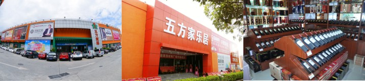

深圳市五方实业有限公司是一家综合性现代化企业,主要涉及矿业、房地产、建材、超市、餐饮等领域。旗下拥有“五方家居”、“五方商业街”、“五方家乐居”、“五方超市”四大品牌。
五方实业本着“以人为本，引导需求”的市场战略定位，秉持“真诚进取，精彩突破”的企业理念，以“高起点谋划、高品质打造、高效率推进”的经营思路，经过十余年的长足发展，多年的潜心经营，不断的品牌升级和服务提升，在业界获得了良好的口碑及社会各界的广泛赞誉！
未来，五方实业将始终坚持稳健扩张和可持续发展的原则，立志将公司塑造成全国一流的零售企业，成为深圳民营领军标杆企业。
深圳市五方家居装饰材料广场成立于2008年9月22日，是由深圳市五方实业有限公司投资开发精心打造，是五方实业有限公司的全资子公司。首家一站式港式家居建材购物体验中心五方家居，坐落于深圳市罗湖区太宁路211号，广场现拥有卖场面积约6万平方米，进驻经营户300多户，经营商品十几万种，是深圳超大规模的大型综合家居建材专业卖场。目前主要经营瓷砖、卫浴、厨柜、橱电、洁具、窗帘、灯饰、门窗、家私、家饰、五金、油漆、墙纸、地毯及睡眠产品、石材加工、不绣钢加工、木材木线工等十几大类商品。实行统一推广、统一管理，统一收银，提供300多个免费车位给您带来更多便利。 五方家居坚持“以诚待人，优质高效，求是求实，不断创新”为企业精神，引进现代化企业经营管理理念及管理体制，领航在行业前沿。我们拥有一个高效务实、营销管理经验丰富的核心团队，秉承着诚信为本、服务至上的经营理念，重质量、守信誉，严把商家驻场关、强化管理体制和营销策略，全力打造国内最具竞争力的“建材百货商场”。 五方家居坚持经营方式和服务举措的不断创新，针对香港客户推出了深圳下单、香港提货、香港安装、关口免费车接送等个性服务，得到了社会各界的支持和赞誉。 未来，五方家居将坚持不断改进，全心全意服务客户的经营宗旨，理性扩张，稳健发展，让更多的人享受更好的服务！
五方家乐居装饰材料广场由从事多年的建材零售企业五方家居及原家乐居合建而成。五方家乐居装饰材料广场位于深圳笋岗片区，是目前最大家居物流集散地，营业面积两万多平方米，主要经营陶瓷卫浴、厨柜厨电、门窗地板、墙纸灯饰、窗帘布艺、地毯墙纸、油漆涂料，石材等十几大类商品。 在经营管理上，五方家乐居导入百货商场的规划经营理念，秉承“关注生活品质，倡导绿色家居”的经营宗旨，统一规划，合理布局，形成独特的商品组合。实行统一推广、统一管理、统一收银、 24小时无缝安保运作。制定严格的商品管理制度，严把商场质量关，进场前要求各商户出具《产品质量合格证书》，与各商户签定《售后服务承诺书》，从根本上杜绝有质量缺陷及非绿色环保装饰建材进入五方家乐居，扎扎实实做好家居健康卫士，努力做到为消费者提供最好的商品、最优的价格和最优的服务，以全新的形象，新的布局为消费者营造和提供休闲购物的双重享受。
五方商业街是五方实业公司的全资子公司，位于罗湖区水贝一路69号大院，总经营面积1万平方米，是目前水贝片区多业种、多业态的商业集合体。主要经营珠宝、烟酒专柜、餐饮、休闲娱乐、宾馆等业态。
